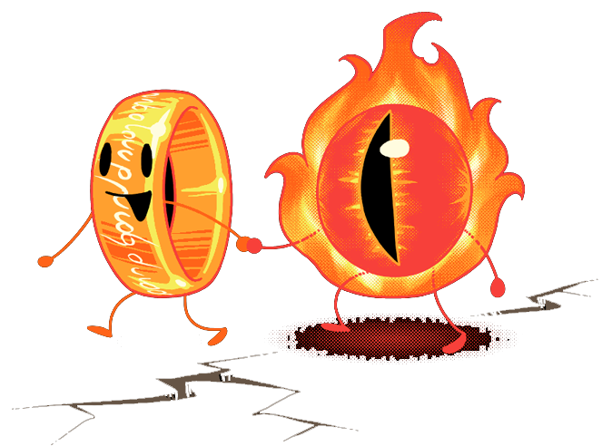

Правила поведения на квесте
Для участия в перформансах и экшн-играх рекомендуется удобная одежда и обувь (строго без каблуков, юбок и других стесняющих движения предметов гардероба), так как предполагается активное перемещение (бегать, прыгать, лазать) по игровой зоне в течение всей игры.
Для участия в эскейпах (квестах формата «выбраться из комнаты») форма одежды может быть свободной, однако и там иногда встречаются неожиданные и сложные места и переходы, поэтому стоит прислушаться к рекомендациям администратора квеста при подтверждении бронирования.
В квестах, перформансах и экшн-играх запрещено:
1. Участвовать в игре в состоянии алкогольного или наркотического опьянения.
2. Проводить фото- и видеосъемку, а также использовать любые гаджеты (мобильные телефоны, планшеты и пр.) во время игры. Их вас попросят сдать в камеру хранения перед игрой.
3. Применять грубую физическую силу по отношению к актерам/персоналу, причинение вреда реквизиту квеста.
Перформансы и страшные квесты с элементами перформанса противопоказаны маленьким детям, беременным женщинам, людям с неустойчивой психикой; лицам с сердечно-сосудистыми и любыми другими заболеваниями, которые могут повлиять на прохождение игры; тем, кто боится темноты, крови, воздействия и вида шокеров, сцен насилия, «бу-эффектов», возможного применения силы со стороны актера.